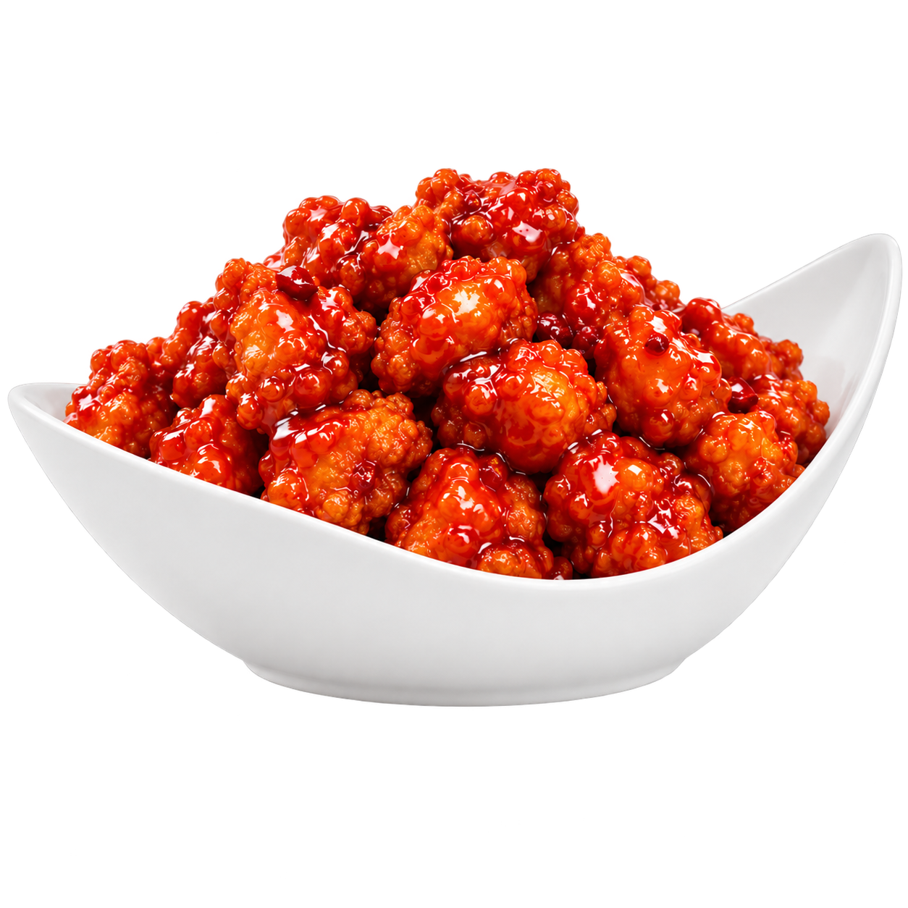
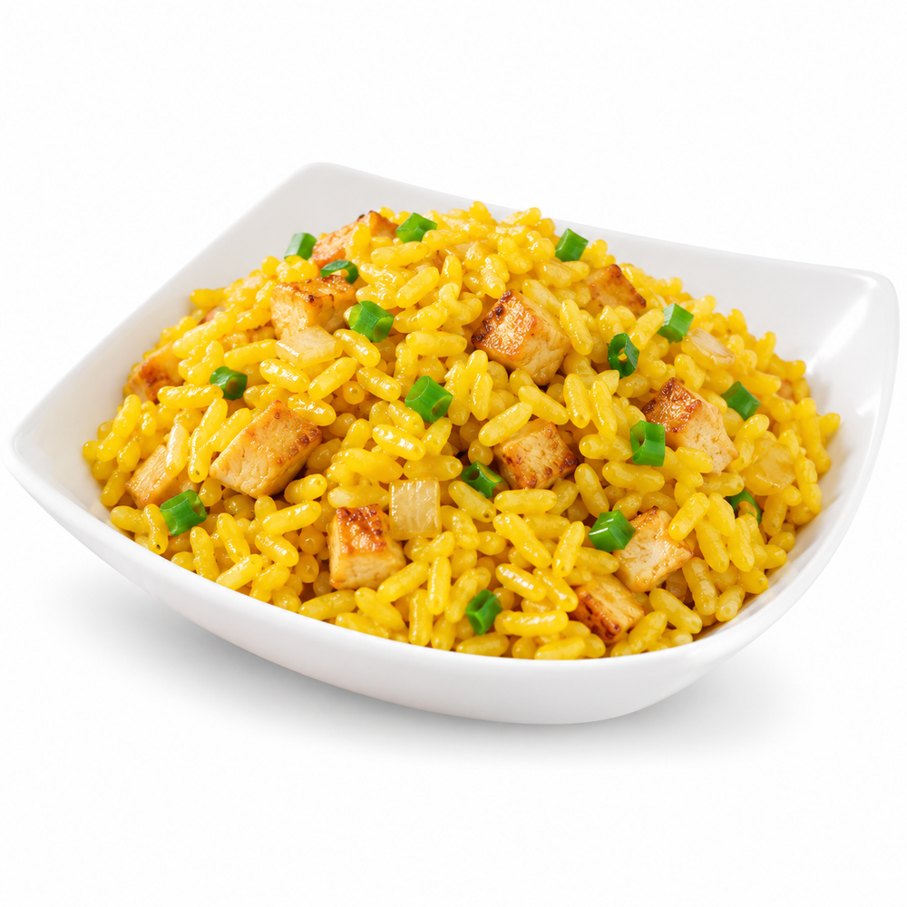
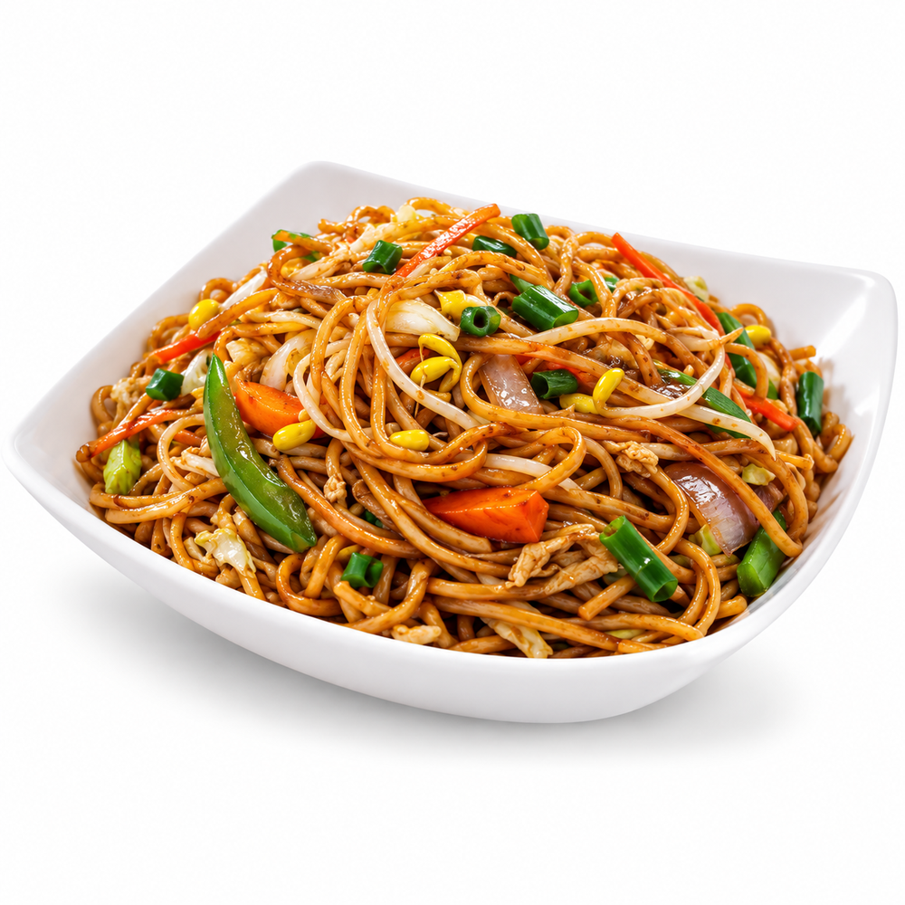
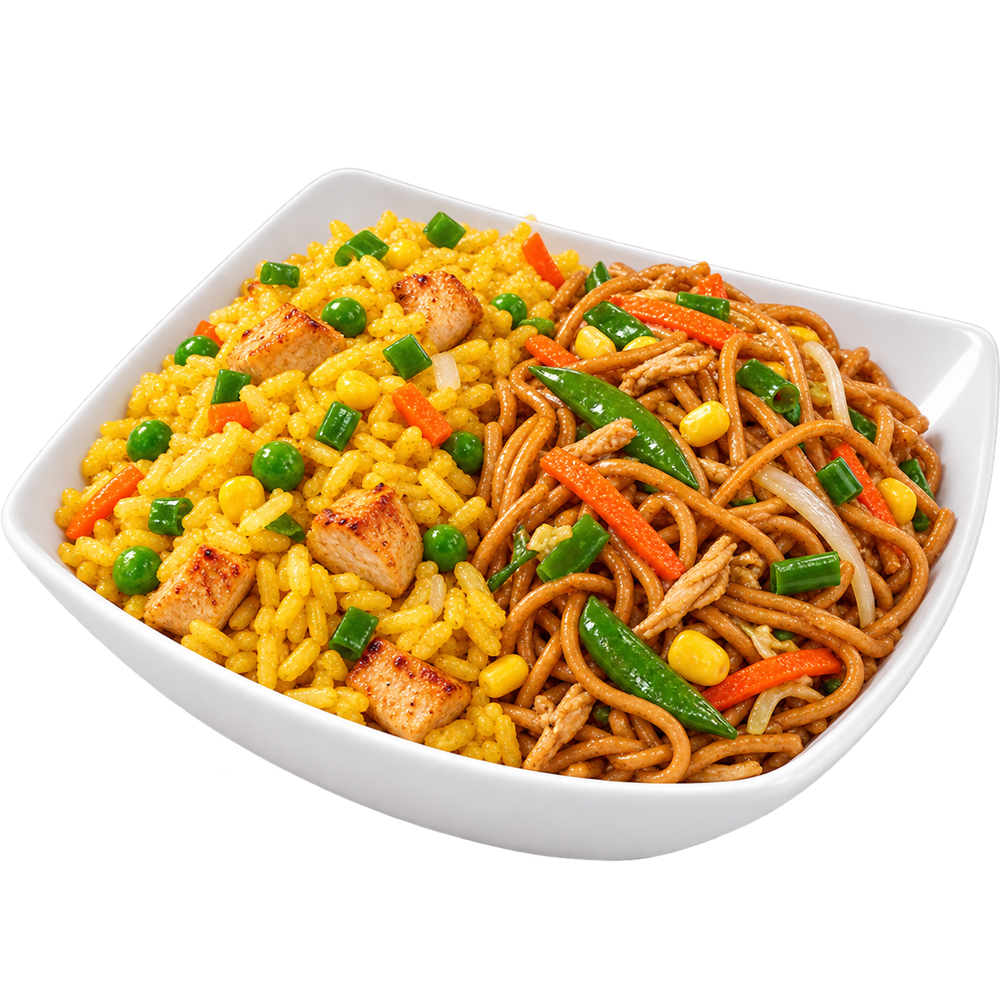
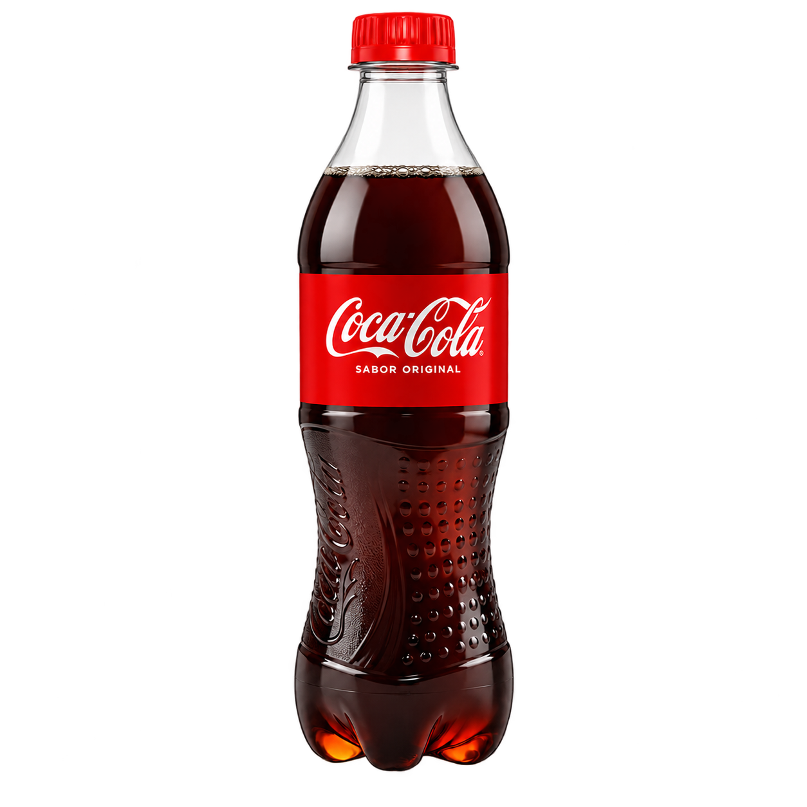
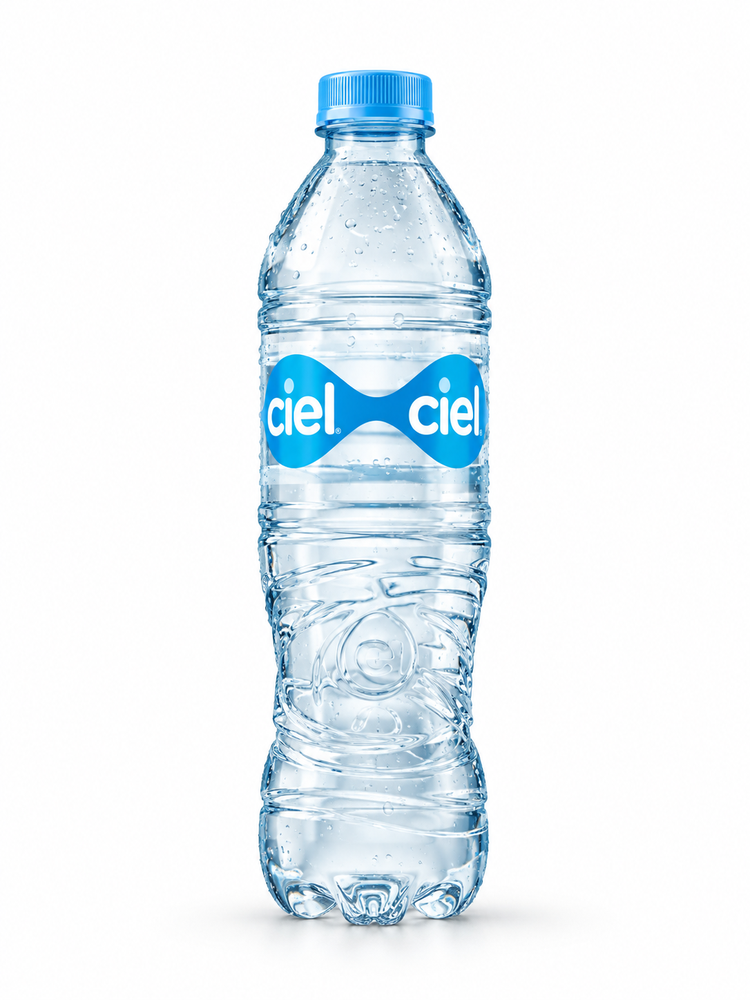
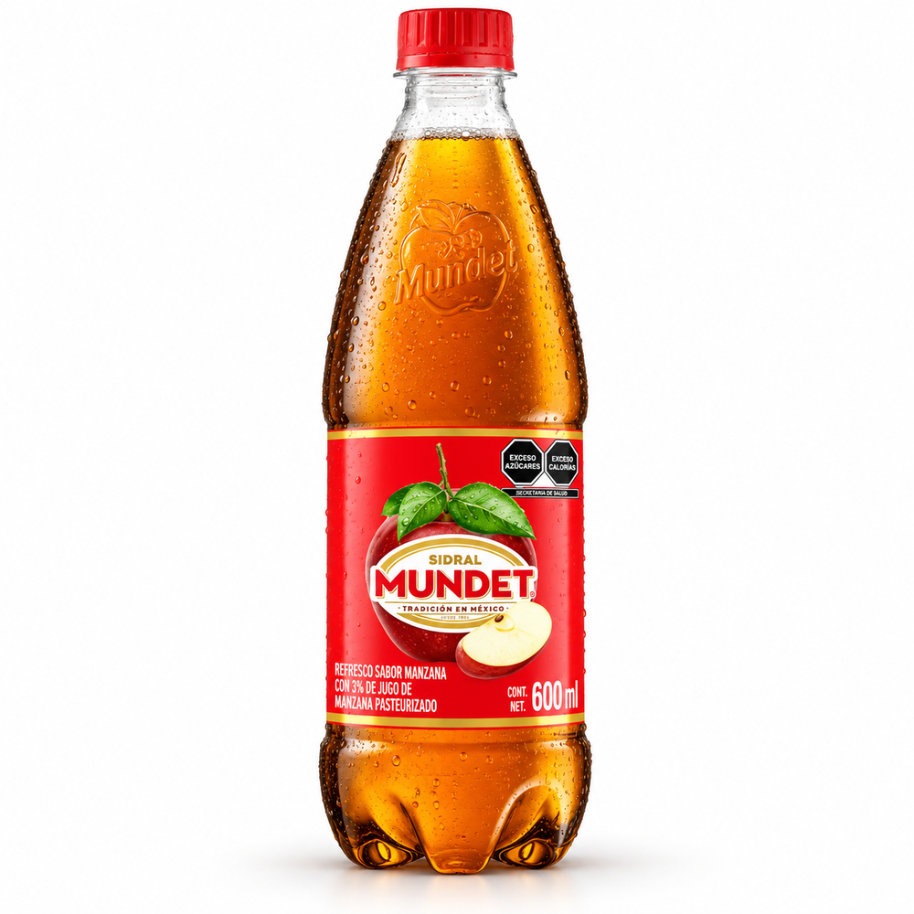
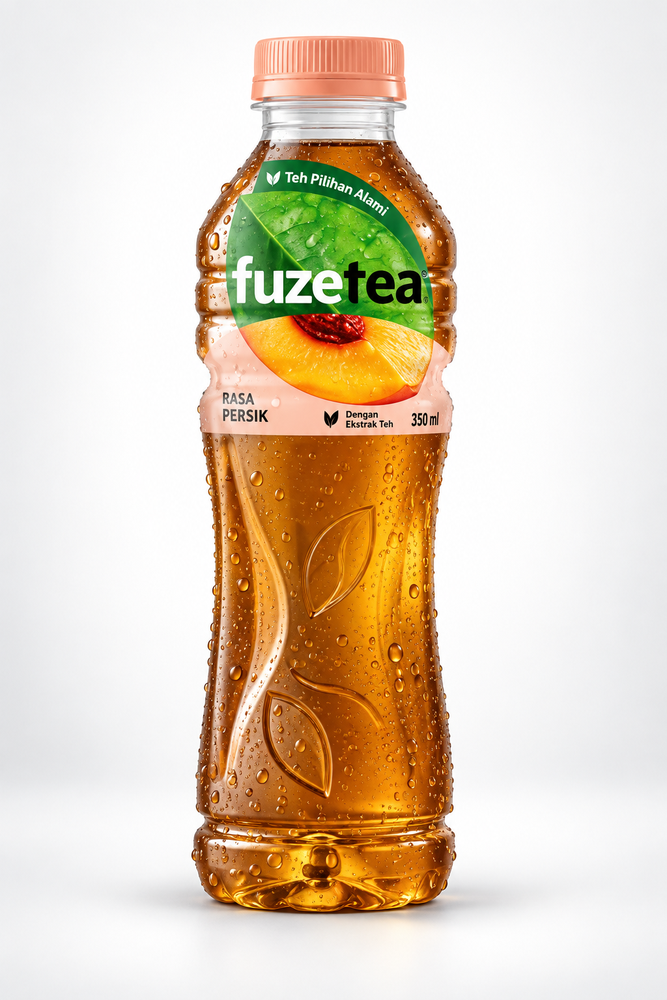
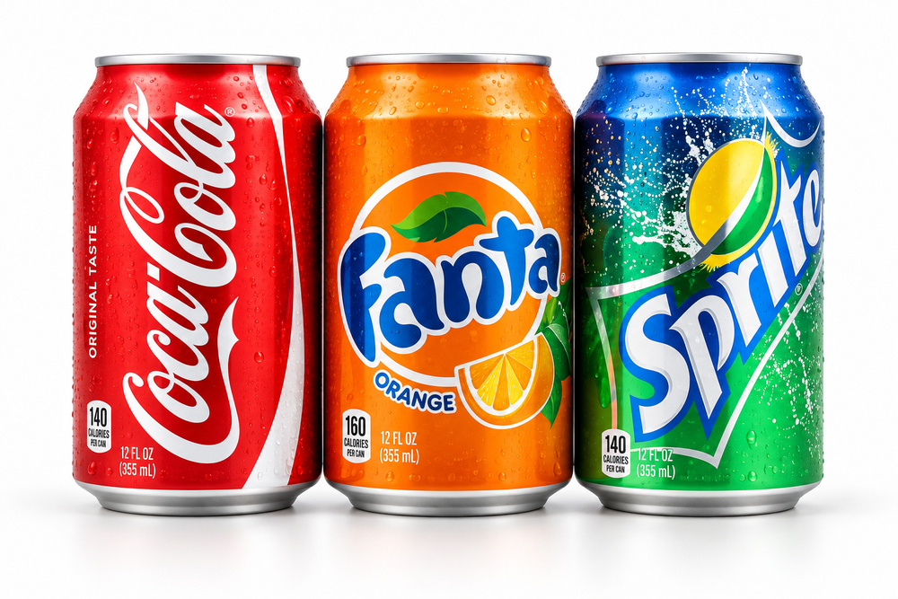

Platillo 1
Para un antojoElige una categoría
Un menú.
Cuatro bolsillos.
Entra a cada pestaña para ver solamente lo que buscas: platillos, guisos, acompañamientos o bebidas.


01 / Platillos
Elige cuántos
guisos quieres.
Todos incluyen un acompañamiento: arroz frito, chow mein o combinado.
Platillo 2
El favoritoDos guisos
+ 1 acompañamiento$160Elegir platillo ↗Platillo 3
Para compartirTres guisos
+ 1 acompañamiento$190Elegir platillo ↗02 / Guisos
El sabor va
por tu cuenta.
Escoge tus favoritos según el tamaño de platillo que elegiste.
El favorito

El más popular
Pollo a la naranja picante
Dulce, brillante y con un toque picante. El guiso que más piden en LONG XING.
- 01Costillas a la BBQ 6 trozos
- 02Pollo a la plancha con picante
- 03Cerdo con calabacitas
- 04Pollo a la plancha sin picante
- 05Pollo, cerdo y lomo
- 06Filete de pescado 2 piezas
- 07Rollos de queso con camarón 1 pieza
- 08Pollo agridulce
- 09Pollo agridulce con picante
- 10Cerdo picante
- 11Brócoli con pollo
- 12Camarones fritos con chile seco 6 piezas
03 / Acompañamientos
Hazle espacio
a lo bueno.
Cada platillo incluye uno. Si no puedes decidir, pide arroz y chow mein combinados.

Calientito y clásico
Arroz frito

El favorito de muchos
Chow mein

Lo mejor de los dos
Combinado
04 / Bebidas
Algo fresco
para acompañar.
Pregunta por sabores y disponibilidad del día. Los precios se confirman al ordenar.

Refresco
Coca-Cola
Consulta disponibilidad
Agua
Ciel
Consulta disponibilidad
Refresco
Sidral Mundet
Consulta disponibilidad
Té
Fuze Tea
Consulta disponibilidad
Varios sabores